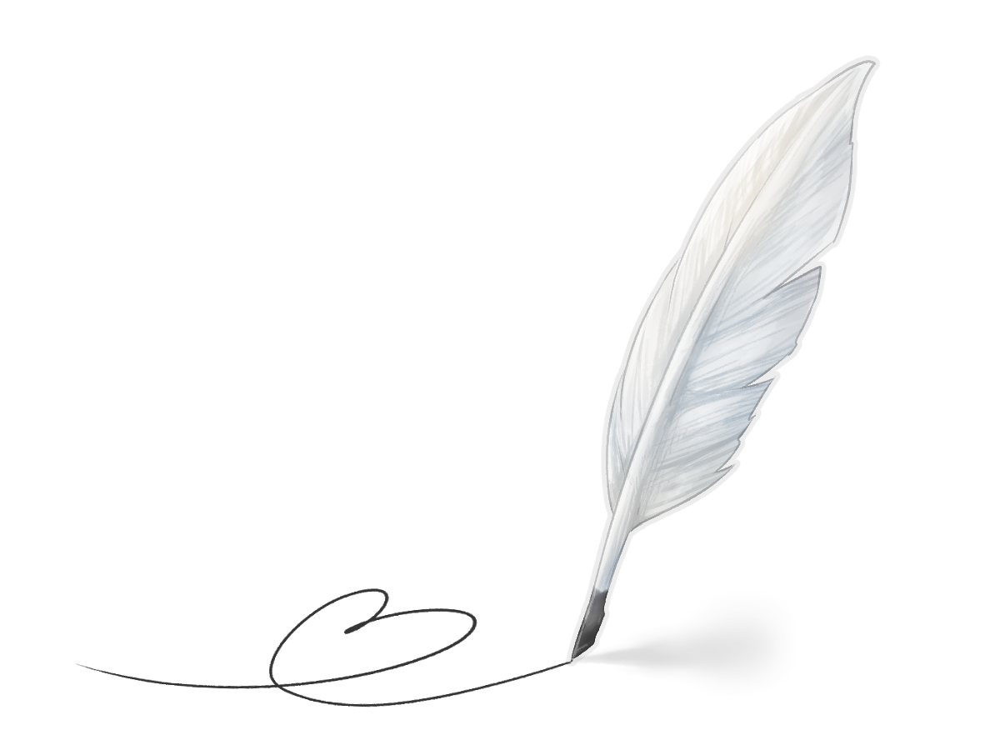

人にはそれぞれ効率の良い学習法があります。
おおまかに３タイプに分類されます。
- ◆ Watch
- ◆ Listen
- ◆ Do
Watch 見る
視覚的に物事を捉える。
本が好き。
説明書を読んでからはじめる。
料理はレシピ通り。
美術館によく行く。
ライブは観る。
夢がカラー。
ナビの方角を北向きで固定しがち。
Listen 聞く
聞くことで自然と頭に入る。
何でも人に聞く。
音楽・ラジオが好き。
大きな買い物をするときは店員に相談する。
外食のメニューは相談して決める。
夢が白黒。
聖徳太子。
Do やる
とりあえずやってみる。
説明書を読まない。
地図も見ない。
料理も行き当たりばったり。
人に教えるのが下手。
服は絶対試着する。
寝相が悪い
ライブはノリノリ。

Watch 見る
Methods
図･イラスト･表を作成しイメージを作る。
教科書を読む。
ノートを綺麗にまとめる。
コードを眺める。
プログラムを眺める。
Listen 聞く
Methods
講師の話を聞く。
YouTubeを聞く。
教科書を声に出して読む。
コードを声に出して読む。
プログラムを声に出して読む。
Do やる
Methods
アホは手を動かせ。